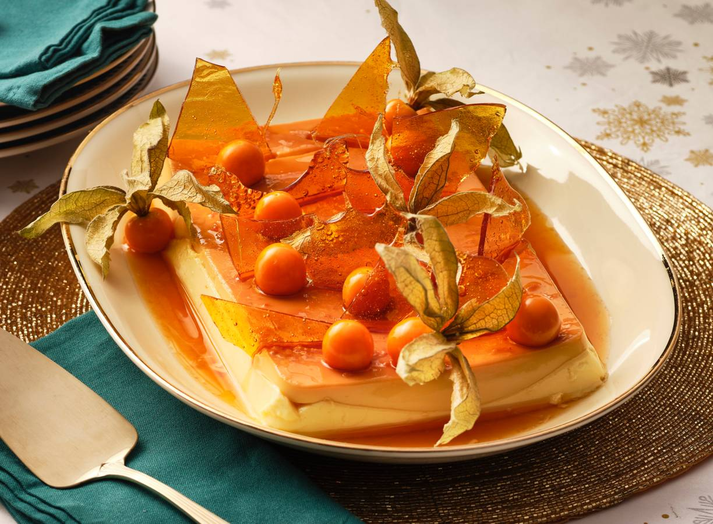

Crème caramel XL met karamelschotsen en Kaapse goudbes
Hoofdgerecht
Een geweldige afsluiting van het kerstdiner.
Na het bakken stort je de crème caramel XL op een mooie schaal en kun je ’m versieren – met zelfgemaakte karamelschotsen en prachtig fruit.
Ingrediënten
- 380 g witte basterdsuiker
- 50 ml water
- 6 middelgrote eieren
- ½ el vanille-extract
- 750 ml volle melk
- 90 g Kaapse goudbessen
Bereidingswijze
- Verwarm de oven voor op 150 °C. Doe 150 g suiker met 50 ml water in een steelpan en laat 6-8 min. op middelhoog vuur karamelliseren tot de suiker goudbruin, tegen koperkleurig aan, is.
Giet de karamel in ovenschaal M en verdeel over de bodem.
-
Splits ⅓ van de eieren (het eiwit gebruik je niet).
Meng de eidooiers in een kom met 80 g suiker, de rest van de eieren en het vanille-extract en klop met een garde tot de suiker is opgelost.
-
Breng de melk aan de kook. Haal van het vuur en laat 5 min. afkoelen. Schenk al roerend met een garde bij het eiermengsel.
Giet in de ovenschaal met karamel en dek af met aluminiumfolie.
-
Zet de ovenschaal met het karamel-eiermengsel in ovenschaal L en vul deze vorm met kokend water tot 2 cm onder de rand. Zet in de oven en bak ca. 1 uur. Haal de folie van ovenschaal M, vul ovenschaal L eventueel bij met kokend water en bak nog ca. 45 min.
Is de crème caramel dan nog vloeibaar, bak ’m dan nog ca. 10 min. extra en controleer of hij stevig is. Herhaal dit indien nodig.
-
Doe ondertussen de rest van de suiker met 2 el water in een steelpan en laat op middelhoog vuur karamelliseren tot de suiker goudbruin, tegen koperkleurig aan, is. Dit duurt 8-10 min.
Roer absoluut niet door, maar draai af en toe met de pan, zodat de suiker loskomt van de randen en gelijkmatig karamelliseert. De karamel mag vrij donker zijn, maar blijf erbij zodat-ie niet aanbrandt. Giet de karamel gelijkmatig uit op een vel bakpapier.
Til de randen van het vel voorzichtig op om de karamel te verspreiden. Let op: het is erg heet! Laat 30 min. afkoelen en breek in grote stukken. Gebruik de mooiste schotsen
-
Haal de ovenschalen uit de oven en laat de crème caramel 2½ uur afkoelen tot kamertemperatuur. Plaats een langwerpige schaal over de ovenschaal met de crème caramel en keer om. Versier met de karamelschotsen en Kaapse goudbessen.
